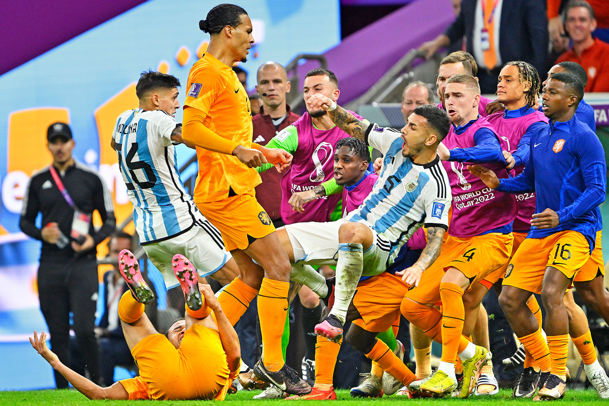

Ik heb 2 hobby's, dat zijn voetballen (spelen en kijken) en gamen. Ik doe het alle twee graag met mijn vrienden. Ik voetbal bij r.k.v.v. Westlandia. Bij voetbal speel ik niet op een heel hoog niveau, maar ik heb het er wel naar mijn zin in mijn Team. Ik kijk graag voetbal en dan de meeste tijd de Nederlandse competitie (Eredivisie) of internationaal, dus het Europees- en Wereld kampioenschap. Ik game niet uren per dag, maar ik vind het wel altijd leuk om te doen, ik doe vaak EAFC 26, Rocket league en Minecraft.